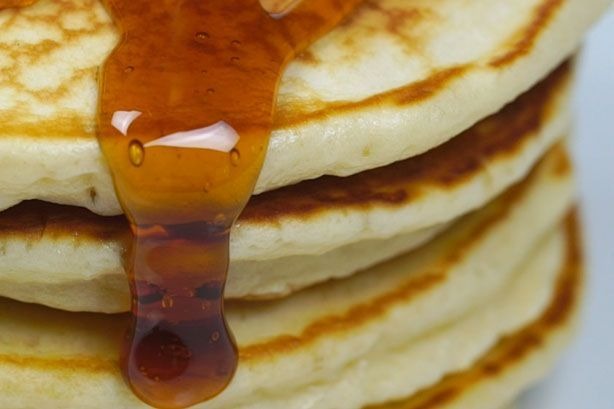

Pancakes

When it comes to making perfect, fluffy pancakes, simplicity is key.
Ingredients
- Eggs
- Milk
- Vanilla
- Flour
- Butter
- Sugar
Steps
- Whisk the eggs, milk, and vanilla together in a jug. Sift flour into a large bowl. Stir in sugar, make a well in the centre and add milk mixture. Whisk until just combined
- Heat a large non-stick frypan over medium heat. Grease pan with butter. Using 1/4 cup mixture per pancake, cook 2 pancakes for 2 minutes or until bubbles appear on surface. Turn and cook for another 1-2 minutes or until cooked through. Transfer to a plate, cover loosely with foil to keep warm
- Repeat with remaining mixture, greasing pan with butter between batches
- Serve with maple syrup and extra butter